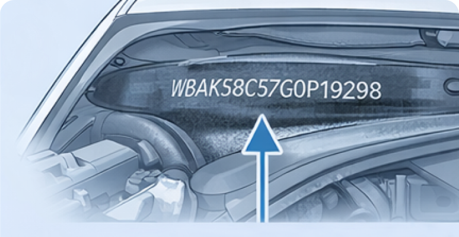
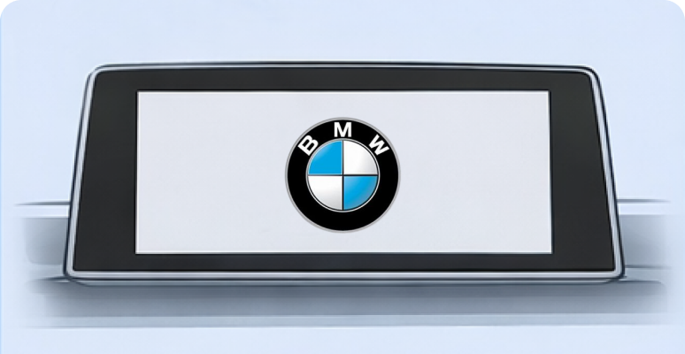

Check BMW X5 in Seconds
Discover factory specifications, trim details, country of manufacture,
engine information, and other key data by BMW X5 VIN code
No Registration Required
Instant Results
Free Basic Report
BMW X5 VIN Check Activity Updated in real time
was tested today
in the database
The BMW X5 is one of the most inspected SUVs with thousands of
reports generated every day. Be informed before you buy.
Original Window Sticker available
01 Factory specs
Original manufacturer specifications including engine, transmission, and trim details
02 Options
Installed packages and optional features added at the factory
03 Pricing
Official MSRP with full price breakdown and equipment costs

Where to Find the VIN on a BMW X5
On a BMW X5, the 17-character Vehicle Identification Number (VIN) can be found in several standard locations on the vehicle as well as in official documents.
Main Locations on the Vehicle

Windshield (lower corner)
The quickest way to spot the VIN is by looking through the windshield from outside the vehicle.

Driver’s Door Frame
Open the driver’s door and inspect the door pillar.

Engine Bay
The VIN may be stamped directly onto the body.

Engine Bay
The VIN may be stamped directly onto the body.
Additional Locations (Depending on Generation)

Under Rear Seat or in the Trunk
In some BMW X5 models, the VIN may be located under the rear seat or beneath the trunk floor.

Onboard System (iDrive)
In modern BMW X5 models, the VIN can be accessed through the iDrive system.
Where to Find the VIN in Documents
If you don’t have access to the vehicle, check the following documents:
Why Check a BMW X5 VIN?
Every vehicle has a story — and not all of it is visible at first glance.
Before committing to a purchase, review the records that truly matter and protect yourself from
costly surprises.
We recommend checking:
- Registration history overview
- Auction exposure
- Accident indicators
- Theft screening
- Mileage records
- Full Vehicle specifications
VIN Decoder & Specifications
VIN Position
Meaning
1–3
Manufacturer (BMW)
4–8
Model, engine type, body style
9
Check digit
10
Model year
11
Assembly plant
12–17
Serial production number
Use this BMW X5 VIN decoder to identify engine specifications, trim level, production year, and factory details instantly.
Popular BMW Models
SEO-текст для блока_H3
The BMW X5 is a premium luxury SUV known for performance, reliability, and advanced technology. A VIN check helps verify its history, specifications, and potential risks before purchase.